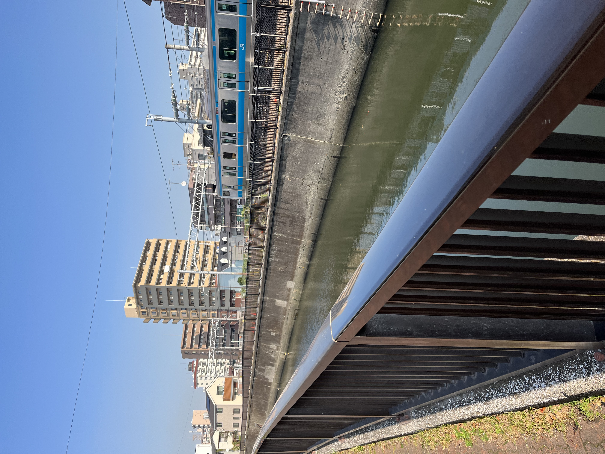

トップページ
>呑川の紹介
<特集>Nature Near Nippon Kogakuin
呑川の紹介
ここでは呑川の 用語解説、 いろいろな生物、 水質対策 について紹介します。

呑川（のみかわ/のみがわ）は、東京都を流れる二級河川で呑川水系の本流です。世田谷区、目黒区、大田区と14.4kmにわたる感潮河川
(*1)でもあるそう。
昭和40年代後半から50年代の呑川の水質は、生活排水等の流入によって悪化していましたが、平成6年度には下水道が概成100%整備されました。
平成7年からは城南三河川清流復活事業による処理水が主な水源となり、通常の水質は、汚れの指標であるBODの環境基準 1リットル当たり8ミリグラム 以下に改善されています。
しかし雨天時には、汚水混じりの雨水や道路上の汚れが流入することで水質が悪化することがあります。その他に、街路樹からの落葉や不法投棄物なども水質悪化の原因となっています。この水質悪化は、特に春から夏にかけての気温が高くなる時期に多く、主に中流域で河川の白濁化やスカムの発生がみられます。
川の用語解説
| 用語 | 説明 | 備考 |
|---|---|---|
| 二級河川 | 二級水系に係る河川で、都道府県が指定した河川 | 公共の利害や生態系への関係を考慮し、河川法による管理の必要性も |
| 二級水系 | 一級水系以外で都道府県が指定した水系です。 | |
| (一級水系とは、国土保全上または国民経済上特に重要な水系として国が指定した水系) | ||
| 感潮河川 | 潮の満ち引きの影響を受ける、感潮区間がある河川 | (*1) |
| 流域 | 降った雨や溶けた雪は、地表面を流れて河川に流れ込む範囲。 | 世田谷区、目黒区、大田区の3区に跨る |
| 暗渠 | 河川などの水の流れが地上から見えない状態にあること | 目黒区と大田区の境付近にある工大橋から上流の区間 |
| Terms | Explanations | Remarks |
呑川の生物
自然があれば生物がやってきます。
- カルガモ (←私のおススメ)
- ボラ（大量に遡上する）
- アオサギ
- カワウ
- 小鴨
- ひとり鴨
呑川の水質対策
水質改善の会が発足されているので紹介します。
- 水質浄化対策研究会
- 水質改善研究部会
- 水質改善作業部会
- 下水道改善研究部会
- 下水道改善作業部会